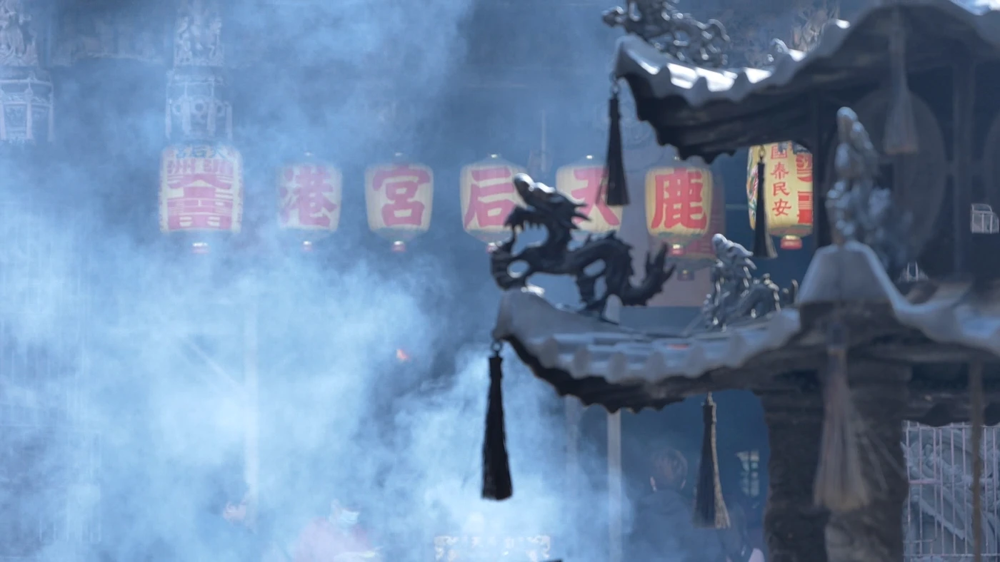
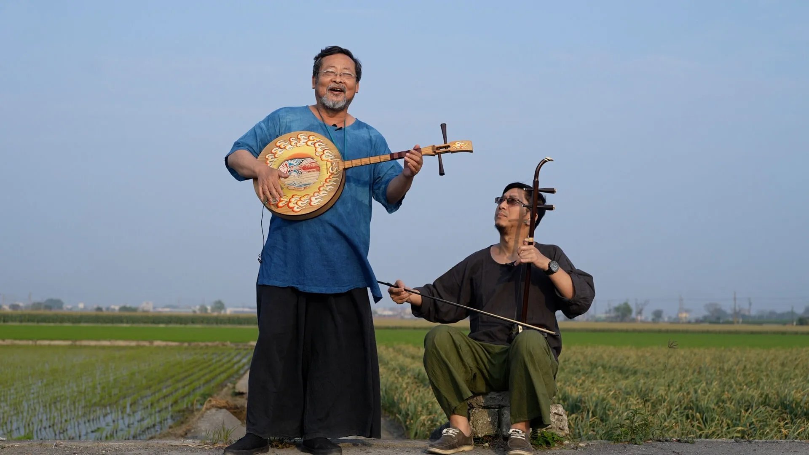

專題 第一季
十個地方的歌
第一季十集，每集分上下兩部。民謠大師陳明章帶著學生蕭詩偉，從彰化鹿港走到台北北投，在每一首歌出身的地方唱那首歌。
民謠大師陳明章彈月琴，他的學生蕭詩偉拉手風琴。《聽！台灣在唱歌》第一季由兩人主持，是一個以音樂為起點的台灣人文旅行節目：循著一首首台灣歌謠，走進歌曲背後的土地與人；上山下海，拜訪地方職人與音樂創作者，看見台灣最真實動人的樣貌。
第一季共十集，走過十個地方：彰化鹿港、新北淡水、彰化溪湖與田中、雲林虎尾與西螺、宜蘭蘇澳與南方澳、台南七股與將軍、新竹關西、基隆、桃園大溪，最後是台北北投。每一站都有屬於那裡的歌——在鹿港唱〈鹿港小鎮〉，在淡水唱〈淡水暮色〉，在基隆唱〈港都夜雨〉，到了北投唱〈再會吧！北投〉。

每集分成上、下兩部播出，每一集也各請一位音樂人同行：謝炘昊、小南方、林俊逸、方宥心、亂彈阿翔、曹雅雯、鄭宜農、李千娜、張文綺與林雨宣。十集的歌單加起來，一共二十八首。
循著一首台灣歌謠，
走進歌曲背後的土地與人。
歌之外，是地方上的人和手藝：鹿港的窗花木藝與手作獅頭、西螺的手工柴燒醬油、關西台灣僅存的竹簾幫、七股井仔腳的瓦盤鹽田、北投唭哩岸的打石業，還有關渡平原最後的自耕農、基隆崁仔頂的魚市場與南方澳的魚丸老店。

第一季的拍攝期間從 2020 年 11 月到 2021 年 10 月。2022 年 12 月起在民視台灣台首播，也在公視台語台播出。
2023 年，陳明章與蕭詩偉以這一季拿下第 58 屆金鐘獎自然科學及人文紀實節目主持人獎。之後兩人再背起樂器，從南台灣一路唱到澎湖與宜蘭，走成八集「人生舞台走唱系列」。